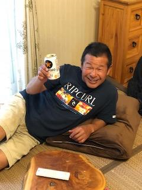
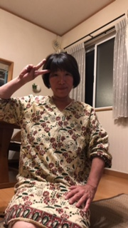
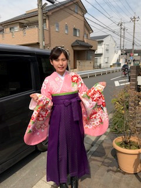

| 名前 | 山北 萌香（やまきた もえか） |
生年月日 | １９９８年２月９日 | 部活動 | ソフトボール部 | 好きな食べ物 | サーティーワンのクレープ・タカノのパフェ | おすすめのお店 |
MAX BRENNER CHOCOLATE BAR 幸せのパンケーキ タカノフルーツパーラーパフェリオ |
好きなこと | スポーツ観戦・食べ歩き | 好きなスポーツ選手 | 福岡ソフトバンクホークスの今宮健太選手 | 家族構成 | 父 父の趣味はサーフィン。20歳から始め今も毎週日曜日は海に出かけている。 父の好きなところは、心が広くて誰に対しても優しいところ。 母 母の趣味はスポーツをカメラに収めること。私のソフトボール部の専属カメラマン。 母の好きなところは、厳しいけど情に熱くいつも一生懸命なところ。 姉 姉の趣味は福岡ソフトバンクホークスを応援すること。日本中を飛び回って応援している。 姉の好きなところは、気配りができ、いつも相談に乗ってくれるところ。 |
私の歩み | １９９８年２月９日 福岡県で誕生 ４歳で福岡県のあかし幼稚園に入園。プール・ピアノの習い事を始める。 あかし幼稚園卒業後、父の転勤により、埼玉県戸田市に引っ越す。 戸田市立戸田第一小学校に入学するが、半年でまた父の転勤により埼玉県八潮市に引っ越す。この時にソフトボールに出会う。 その後八潮市立大原小学校に入学。 大原小学校卒業後、ソフトボールを続けるため東京都の中でも強豪校である神田女学園中学校に入学する。 中学三年生の時に夏の都大会、優勝を果たし東京NO.1になる。 その後、そのまま神田女学園高等学校に進学しソフトボールに励む。 都大会で優勝することができず、大学でもソフトボールを続けることを決意。 |
|---|
おみくじです。スタートボタンをクリックして始めよう！